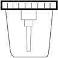
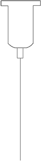
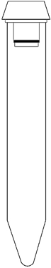
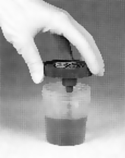
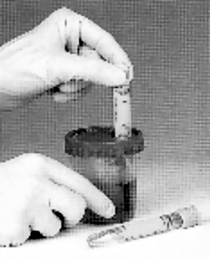
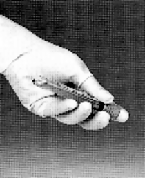
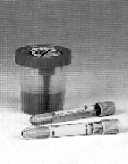

Productos orina
bd vacutainer®
Equipo para recolección de orina
marca BD Vacutainer®
CARACTERÍSTICAS:
|
 |
Recipiente de plástico estéril con capacidad de 120 ml, compatible con el Sistema BD Vacutainer®. |
|
|
Adaptador compatible con el sistema BD Vacutainer®, para facilitar la transferencia de las muestras, cuando no se cuenta con sistema integrado en recipiente. |
 |
|
|
 |
||
|
Tubo de plástico al vacío, con fondo crónico, estéril con volumen de drenado 8 ml. |
VENTAJAS:
Sistema cerrado: Evita derrames y contaminación por trasvasado de las muestras. Transferencia directa del recipiente al tubo.
Seguro: Toda muestra biológica es infectocontagiosa hasta que se demuestre lo contrario. La exposición a la orina tiene los mismos riesgos potenciales que la sangre.
El sistema minimiza la probabilidad de contacto.
Garantiza la calidad de la muestra: Todos los componentes son estériles, lo cual nos permite tener una muestra de calidad, siempre y cuando se indiquen al paciente las indicaciones adecuadas de asepsia en caso necesario.
Compatible con equipos automatizados: Le permite reducir el tiempo de trabajo un 50%.
INSTRUCCIONES DE USO:
Entregar al paciente el recipiente de plástico estéril para que entregue su muestra de orina con las indicaciones necesarias de asepsia en caso de prueba microbiológica.
 1  2
 3  4
1. Una vez que el paciente entrega la muestra, en el recipiente de recolección, verificar que el dispositivo de succión pegado a la tapa esté cubierto a más de la mitad.
2. Remover la etiqueta e insertar el tubo BD Vacutainer® en el orificio de la tapa. Presionar hacia abajo y la orina empezará a fluir al interior del tubo.
3. Si el tubo tiene conservador, invertir 8 veces el tubo.
4. Colocar la etiqueta nuevamente y enviar las muestras a uroanálisis o cultivo.
PRESENTACIÓN:
|
Núm. de catálogo |
Descripción |
Volumen |
|
364951 |
Tubo con conservador mirobiológico* al vacío de plástico. Tapón Gris. |
Tubo de 4 ml 13 × 75 mm |
|
364953 |
Kit de tubo con conservador mirobiológico* y adaptador para transferencia. |
Tubo de 4 ml 13 × 75 mm |
|
364975 |
Vaso con adaptador de transferencia integrado. |
120 ml Bolsa con 200 pz |
|
364980 |
Tubo cónico al vacío de plástico. |
Tubo de 8 ml 16 × 100 mm |
|
364989 |
Kit con vaso de 120 ml y tubo al vacío cónico de plástico. Sin Conservador. |
Tubo de 8 ml |
|
364992 |
Tubo cónico con conservador para uroanálisis+ al vacío de plástico. |
Tubo de 8 ml 16 × 100 mm |
|
364999 |
Contenedor de 24 horas color ámbar para protección de la luz. Graduación de volumen. |
3 litros |
|
364966 |
Adaptador de |
— |
|
364946 |
Kit con vaso y tubo vacío cónico de plástico. Con Conservador. |
120 ml. Vol. Tubo 8 ml |
* Conservador microbiológico (ácido bórico, formato de sodio y borato de sodio).
+ Conservador para uroanálisis (clorhexidina, etilparaben y propionato de sodio).
DATOS COMPLEMENTARIOS: Para mayor información sobre asesoría técnica llamar a:
BECTON DICKINSON DE MÉXICO, S. A. de C. V.
Teléfono: (55) 5999-8200.
Directo: (55) 5999-8360.
® Marca registrada
www.bd.com/mx